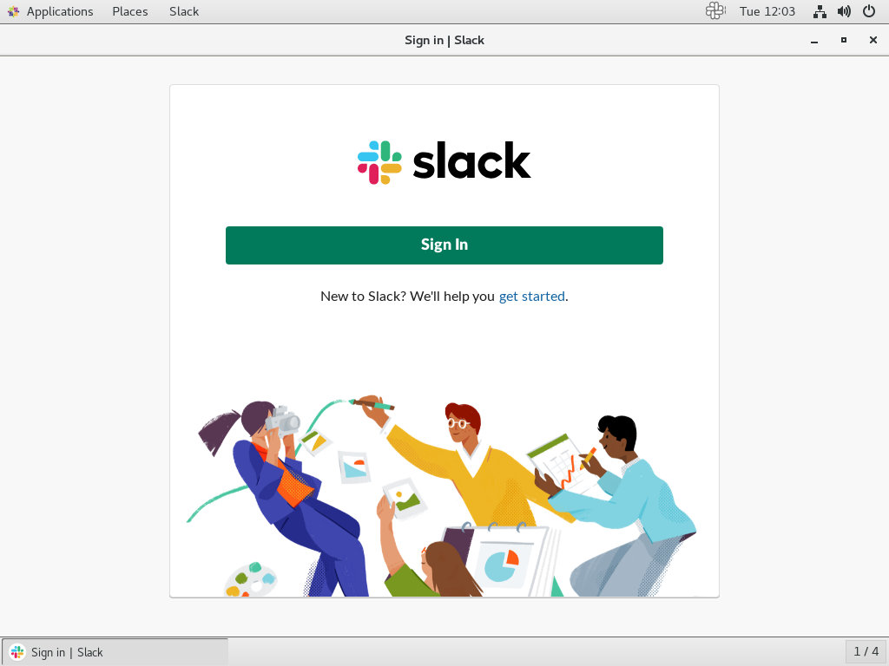

如何在 CentOS 7 上安装 Slack
Slack 是世界上最受欢迎的协作平台之一，它将您的所有通信融合在一起。Slack 中的对话通过频道组织。您可以为团队，项目，主题或任何其他目的创建渠道，以保持信息和对话的有序性。您可以搜索在频道或消息中发布的所有内容。Slack 还允许您通过音频或视频通话与您的队友交谈，并共享文档，图像，视频和其他文件。
Slack 不是一个开源应用程序，它不包含在 CentOS 存储库中。本教程将指导您如何在 CentOS 7 上安装 Slack。
先决条件
以下命令假定您以具有 sudo 权限的用户身份登录。
在 CentOS 上安装 Slack
完成以下步骤以在 CentOS 7 上安装 Slack。
1.下载 Slack
使用 Ctrl+Alt+T 键盘快捷键或单击终端图标打开终端。
访问 Slack for Linux 下载页面并下载最新的 Slack 的 64 位 .RPM 文件。如果您更喜欢命令行，请使用以下wget 命令下载文件：
wget https://downloads.slack-edge.com/linux_releases/slack-3.4.0-0.1.fc21.x86_64.rpm2.安装 Slack
下载完成后，运行以下命令安装 Slack rpm 软件包：
sudo yum localinstall ./slack-*.rpm3.启动 Slack
既然已经在 CentOS 桌面上安装了 Slack，您可以通过键入 slack 或单击 Slack 图标（Activities → Slack）从命令行启动它。
当您第一次启动 Slack 时，会显示如下所示的窗口：

从这里，您可以登录您已经是其成员的工作区，或者创建一个新工作区并开始与您的朋友和其他开发人员协作。
更新 Slack
在安装过程中，官方的 Slack 存储库将添加到您的系统中。使用cat 命令验证文件内容：
cat /etc/yum.repos.d/slack.repo[slack]
name=slack
baseurl=https://packagecloud.io/slacktechnologies/slack/fedora/21/x86_64
enabled=1
gpgcheck=0
gpgkey=https://packagecloud.io/gpg.key
sslverify=1
sslcacert=/etc/pki/tls/certs/ca-bundle.crt这可确保在通过桌面标准软件更新工具发布新版本时，Slack 安装将自动更新。
结论
在本教程中，您已经学习了如何在 CentOS 7 桌面上安装 Slack。有关如何使用 Slack 的更多信息，请访问 Slack 文档页面。